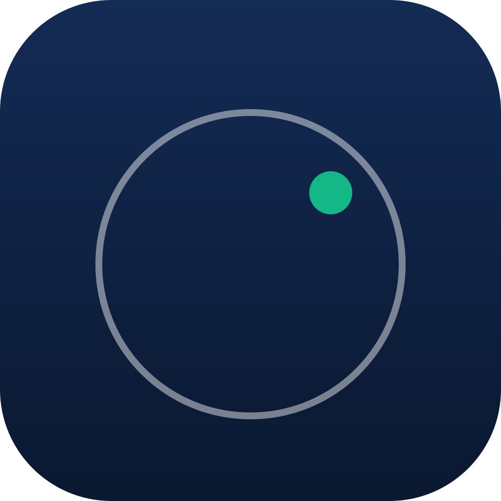
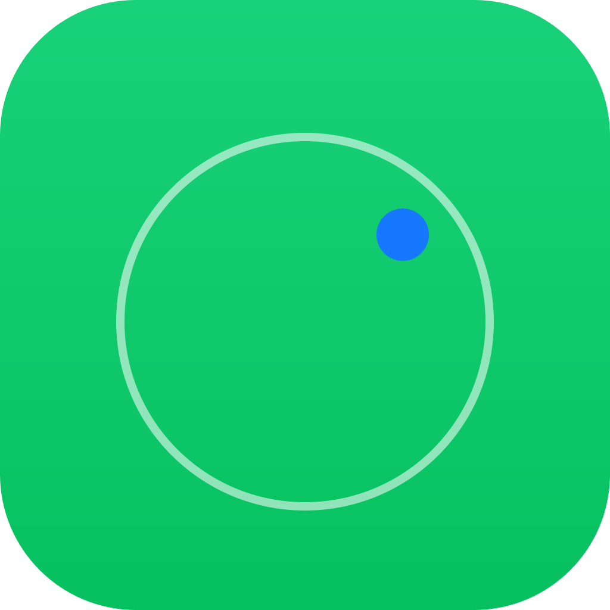
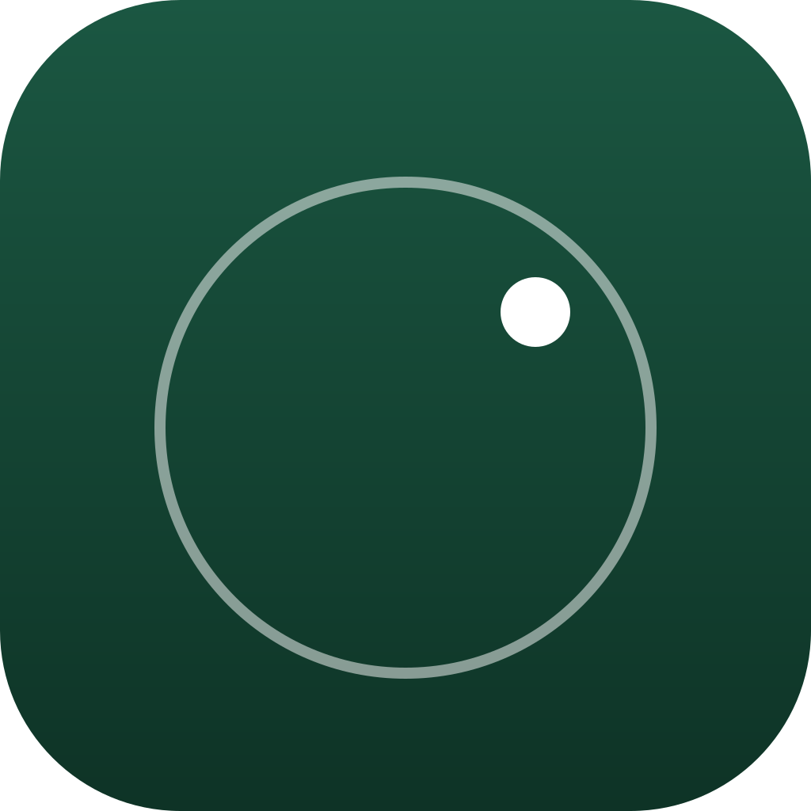
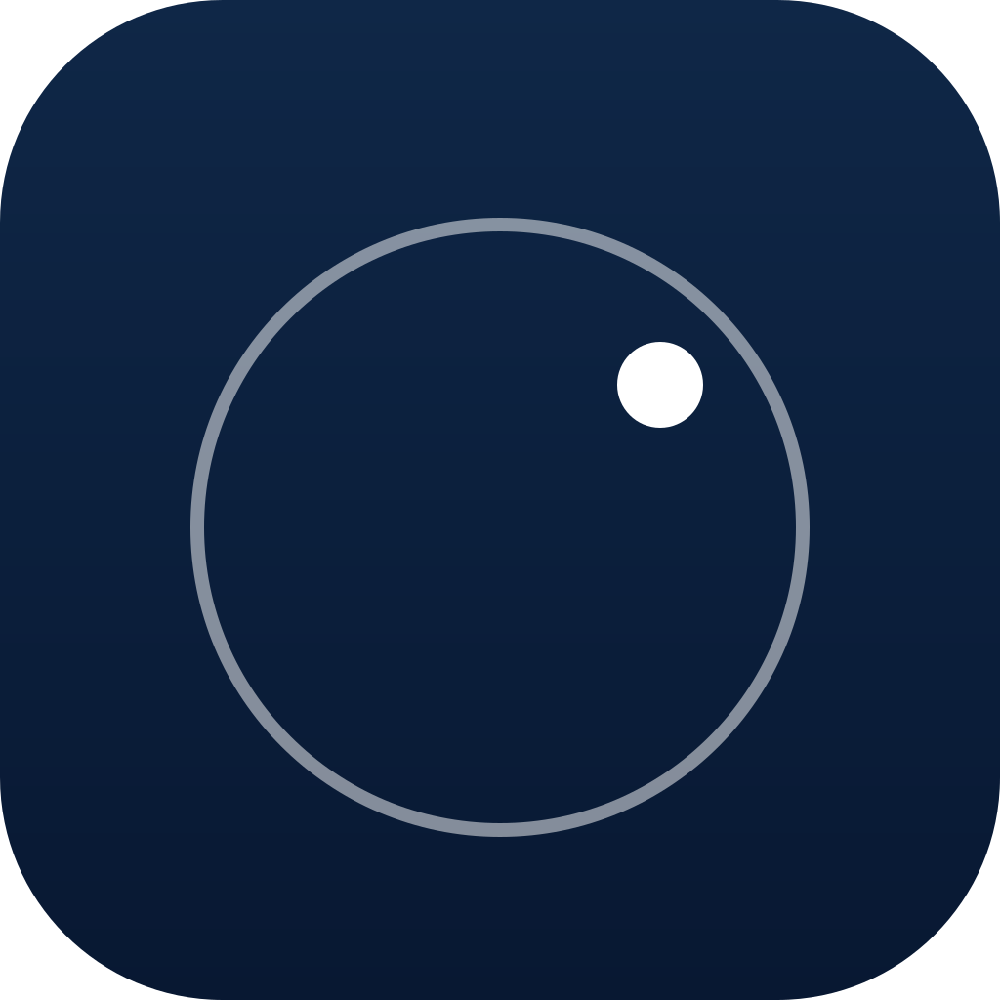

改用支付宝蓝 #1677FF + 微信绿 #07C160，更鲜活。挑一个告诉我：C1 / C2 / C3 / C4。

蓝底 (#1677FF) + 绿点 (#07C160)。最「中文互联网」的配色，鲜活、社交感强。蓝绿撞色对比最强，主屏上跳得出来。

绿底 (#07C160) + 蓝点 (#1677FF)。C1 的反向。绿色作为主体更生机、更春天感，蓝点像晴天里的一道小标记。

纯微信绿 (#07C160) 渐变 + 纯白点。最简单、最干净。绿色调性比 C1 / C2 都更柔和，白点不抢戏，看着舒服不累。

纯支付宝蓝 (#1677FF) 渐变 + 纯白点。比 C3 更清冷、更专业一点。蓝白是社交 App / 工具 App 最经典的组合（Twitter、Telegram、Linkedin）。